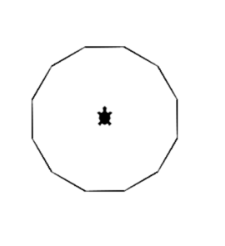

In diesem Dokument lernst du die Programmiersprache Python kennen. Die Aufgaben sind nach Schwierigkeitsgrad aufgebaut. Du kannst selbständig entscheiden wie weit du kommst. Es ist nicht der Zweck dass alle Aufgaben gelöst werden müssen. Gerne kannst Du mir am Schluss über Deine Erfahrung berichten. Die sind mir wichtiger als Deine Lösung
Downloade die Datei Vorlage.py auf dein Gerät. Öffne den Link https://webtigerpython.ethz.ch/ Öffne im Online Editor die Datei «Vorlage.py». Mit dieser Datei als Grundlage sind die nachfolgenden Aufgaben lösbar.
Versuche im Online Editor folgende Grafik nachzubauen. Ein Quadrat

Versuche im Online Editor folgende Grafik nachzubauen. Ein 12-Eck Hinweis: Verwende eine Schleife
Eine gleichmässige Spirale

Eine wachsende Spirale Hinweis: verwende den Zähler i der Schlaufe.

Reihe von Rechtecken (Hinweis: Am einfachsten geht es mit einer eigenen Rechteck-Funktion)

Farbige Reihe (Hinweis: die Farbe lässt sich mit t.pencolor(Rotanteil, Grünanteil, Blauanteil) verändern)

Farbiges Feld (Hinweis: Zwei Schlaufen ineinander)

Farbige Linien (Hinweis: verwende setPos() und t.goto() für die Linien)

Kommentar :#*Hier kommt der Kommentar hin*
Variable :*xyz* oder *xyz* = *3*
Schleife :for i in range(*Wiederholungen*): *Code ist eingerückt*
Logikabfrage : if *x == y*: *Code ist eingerückt*
Funktionen :def *Funktionsname*(*Wert1*, *Wert2*): *Code ist eingerückt*
Funktion aufrufen :*Funktionsname*(*Wert1*, *Wert2*)
(Angaben in ** sind Platzhalter für eigene Namen und Werte